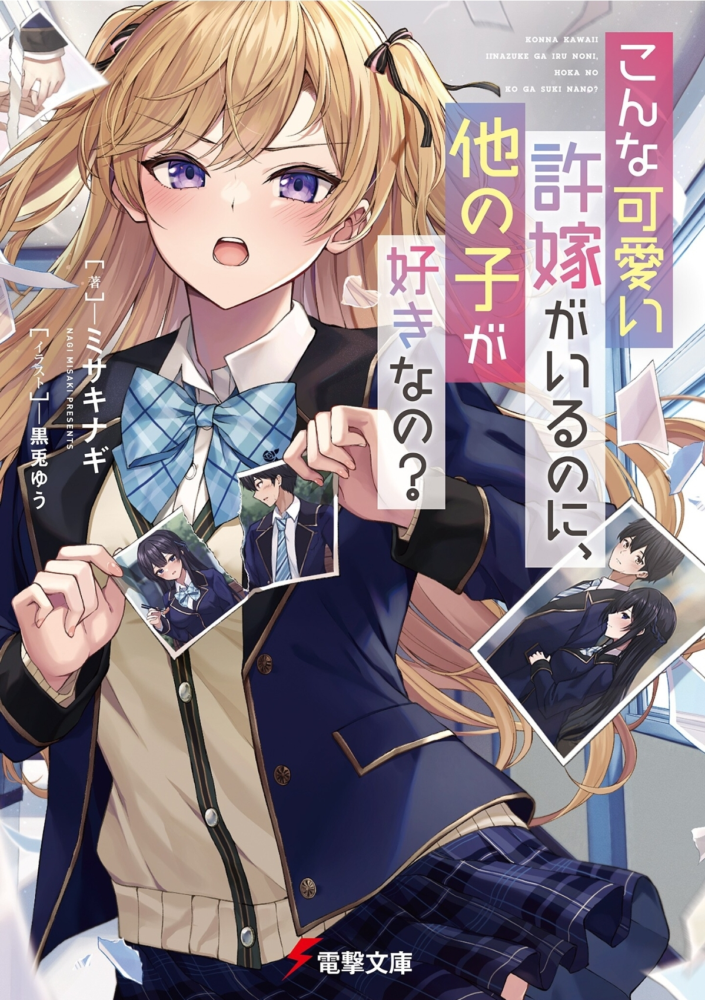

How Could Could You Like Another Girl When You Already Have A Cute Fiancee Like Me?
Novel Info's
Status: Ongoing
Genre: Comedy, Drama, Harem, Romance, School Life, Shounen, Slice of Life
Author: Misaki Nagi
Illustrator: Kurousagi Yuu
Volumes: 2
Original Publisher: Dengeki Bunko
English Publisher: N/A
Fan Translation: Neosekai Translations
Description/Sypnosis
Chris, a super celebrity beautiful girl who claims to be his fiancée, suddenly appears in front of Kouta, a high school student who is poor and works part-time every day. He learned that 10 years ago, Kouta’s father, who was blinded by money, had a marriage contract without permission.
We will not be at our parent’s mercy! The two who hit it off and decided to form an “Engagement Breakup Alliance”. However, this was Chris’s strategy to turn around her first love partner, Kouta─!!
“Kouta will make a lie that you have another fiancée. First of all, you should start by finding someone you like.”
“Wait, hold up. No need. I could just propose to my current girlfriend!”
“…Huuh!? A girlfriend─!?”
A love triangle that begins with the cancellation of an engagement!?
Download Links
Epub & Pdf